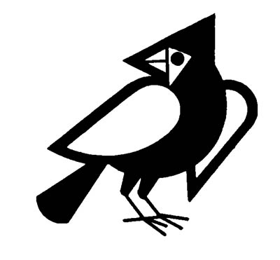
Because we are the evolutionary product of an ancestry stretching back millions of years to an origin in the animal kingdom, many traces of our animal heritage can be found in our physiological and psychological functioning. There is a whole menagerie of animals who emerge during our nocturnal dreaming safaris to the dark continent of our sleeping mind.
What significance should be given to these jungle or domesticated denizens who appear in our dreams? Here are some speculations that have been advanced by various dream theorists: In "The Interpretation of Dreams", Freud proposes that
"wild beasts... represent passionate impulses of which the dreamer is afraid, whether they are his own or those of other people" (1961, p. 410).
Ernest Jones, a follower of Freud, says:
"Analytical experience has shown that the occurrence of animals in a dream regularly indicates a sexual theme, usually an incest one" (1959' p. 70).
Hadfield (1954) suggests that crab, spider and vampire images represent the visceral objectifications of the bodily feelings associated with orgasm. The crab portrays the changes in visceral and abdominal muscles which produce a gripping sensation; the relaxed feelings following orgasm are represented by the sprawling legs and soft underbelly of the spider image; the washed-out feeling of fatigue, as though the blood had been sucked dry, is externalized by a vampire figure.
Jelliffe and Brink noted "the astonishing revelation in psycho-neurotic dreams of the use of animal material" (1917, p. 253). Stekel claims "The danger of approaching insanity expresses itself in dreams of... a sudden attack by a wild beast" (1943, p. 421). Gutheil states "Very often the unconscious is represented by sinister animals" (1960, p.l63). He also proposes that being bitten by an animal may be a symbol of "pangs of conscience". Despert, in discussing the dreams of preschool children, comments "animals as motives are almost always sadistic and often totally destructive, regardless of size, etc. They bite and devour the child or chase him" (1949' p. 141). According to Fodor (1951), being swallowed by a voracious ani mal is a portrayal of our intense fear of birth.
For Jung (1916), animal figures:
"in so far as they do not symbolize merely the libido in general, have a tendency to represent father and mother, father by a bull, mother by a cow".
Freud refers to dreams in which
"a dreaded father is represented by a beast of prey or dog or wild horse" (1961, p. 41).
In a paragraph describing how many specific animals such as snakes, fish and cats are used as genital symbols, Freud states "Small animals and vermin represent small children - for instance, undesired brothers and sisters" (1961, p. 357). Just as Shakespeare used animal analogy as a technique for character 'portrayal (Yoder, 1947), animal figures can be employed to represent various aspects of the dreamer's character. Thus Boss writes "In subjective interpretation a dream tortoise would signify the tortoise-like and armored character of the dreamer himself" (1958, p. 49).
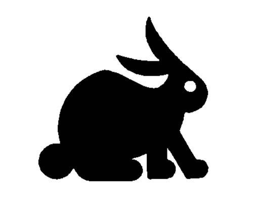
It's obvious that many theoretical views regarding the significance of animal figures in dreams have been advanced. I found these references when I was preparing a book chapter entitled "Animal Figures in Fantasy and Dreams" (1983). That chapter also contains a review of all the research studies where the frequency or type of animal figures in dreams were given. In one study that I carried out, I examined 2,000 dreams of female college students and 2,000 dreams of male college students to discover how often animal figures appeared and which animals were most common.
There were 149 female and 151 male dreams containing at least one animal figure. This represents a frequency of 7.5% for each sex. The ten most common animals for adults were:
| Animal type | Females | Males | Both |
|---|---|---|---|
| Dog | 42 | 24 | 66 |
| Horse | 38 | 21 | 59 |
| Cat | 17 | 10 | 27 |
| Bird | 9 | 18 | 27 |
| Snake | 8 | 16 | 24 |
| Fish | 11 | 10 | 21 |
| Insect | 12 | 8 | 20 |
| Water Animal | 6 | 10 | 16 |
| Fowl | 5 | 9 | 14 |
| Rodent | 8 | 2 | 10 |
If this table is examined, you can see that women were more likely to have mammals in their dreams while men reported more non mammals. Of the total of 194 animal figures in women's dreams, 128 were mammals, 54 were non mammals and 12 were generic animals. Of the total of 203 animal figures in men's dream, 98 were mammals, 92 were non mammals, and 13 were generic animals.
Mammals are biologically and conceptually more similar to humans. Women report more mammals and they also report more human characters than men do in their dreams (Hall and Van de Castle, 1966). In my chapter, I present some evidence to suggest that a higher level of animal phylogenetic (evolutionary) development may be associated with a higher level of social and emotional maturity.
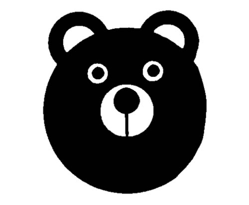
I also examined the animal figures in the dreams of 721 children aged 4 - 16 years old. There were 383 girls and 358 boys. My chapter presents frequencies of each animal figure at each year level for girls and boys separately. Animal figures were present in 39.4% of dreams from the four and five year olders and the percentage figure steadily dropped for each subsequent two year age grouping (35.5, 33.6, 29.8, 21.9, 13.7). The latter figure covers a three year grouping from ages 14 - 16. Animal figures appeared in 29.0% of the combined girls' dreams and 29.6% of the combined boys' dreams.
To make a table comparable to that provided for college students, the ten most common animal figures in the combined children's' dreams will be presented (including monsters, where the dream description made it clear that it was an animal or something like a wolfman rather than a human monster):
| Animal type | Girls | Boys | Both |
|---|---|---|---|
| Dog | 15 | 15 | 30 |
| Horse | 22 | 6 | 28 |
| Cat | 9 | 6 | 15 |
| Snake | 6 | 9 | 15 |
| Bear | 7 | 7 | 14 |
| Monster | 5 | 8 | 13 |
| Lion | 5 | 8 | 13 |
| Bird | 6 | 6 | 12 |
| Spider | 2 | 7 | 9 |
| Gorilla | 4 | 5 | 9 |
The girls reported more mammal figures than boys. Of the total of 128 animal figures in girls' dreams, 91 were mammals and 25 were non-mammals. The others were generic and monsters. Of the total of 130 animal figures in boys' dreams, 73 were mammals and 46 were non-mammals.
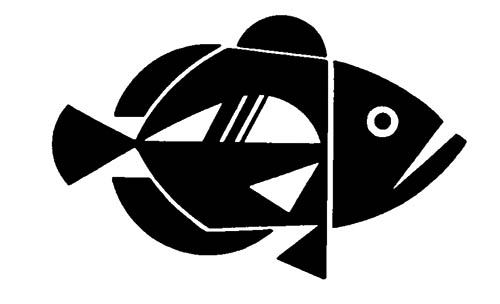
It can be seen that some types of animal figures are more prevalent in children's dreams. The combination of snakes, bears, monsters, lions, spiders, gorillas, tigers and insects accounted for 34% of the animals in children's dreams, but this same grouping of animals appeared in only 17% of college students' dreams. Children dream more frequently of wild, threatening animals while college students dream more often of pets or domesticated animals.
To obtain a better understanding of the meaning of animal dreams, I performed a contingency analysis, to discover what other elements are present in the dreams where animal figures are represented. I examined 901 dreams (453 from women, 454 from men) of college students in which all the characters were human and compared them to 150 dreams (75 from women, 75 from men) where at least one animal character was present. The presence of animal figures in dreams has a significant effect upon other features of the dream. Dreams with animal figures are more likely to be short, take place in an outdoor setting which is unfamiliar or distorted, have a great deal of activity, often of a violent nature, or be associated with some misfortune. The dreamer experiences apprehension, becomes more sensitized to various parts of his/her body, and exerts some effort to overcome a challenging problem encountered in his/her dream. As the number of animals in the dream increases, all of the features described above become more intensified.
For those dreams where only humans appeared, there are 28 aggressive acts for every 100 characters present, but in dreams where animal figure predominate, there are 56 aggressive acts for every character. If a dreamer is going to have another character initiate some interactional pattern with him/her, there is a 44% chance that friendliness will be received if the other character is a human but only a 4% chance if that character is an animal. In my chapter, I also look at what types of animals are present in 246 dreams from two groups of Australian Aborigines; 118 dreams from natives on South Pacific islands; 190 dreams from North American Indians; and 448 Peruvian dreams. Fish or other forms of aquatic animals were the most frequent type of animal figures for those groups living near water but were almost totally absent in the dreams of inland dwelling groups (Central Australia and Hopi Indians). Snakes were reported fairly often (27 times) by Australian Aborigines and Hopis but never by South Pacific islanders. Kangaroos, wallabies, crocodiles, and stingrays were exclusive to Australian dreams; the only cats were in Truk Island dreams; and the only exotic jungle animals (lion, tiger, elephant) were found in the dreams of Peruvian students. Thus, in preliterate societies, the animals dreamed about are those the dreamer has encountered in daily living, frequently in a hunting or fishing context, while members of a literate society have an almost limitless number of animals available to them for portraying the animal characteristic needed for a particular dream scenario (sly as a fox, strong as an ox, free as a bird, etc.). The particular types of animals we employ in our dreams will clearly be a function of what culturally shared or personally learned associations we have developed regarding particular animal species.
You might find it a useful exercise to examine your dream journal for the types of animal figures that have appeared in your dreams and note what types of feelings, events, and outcomes were associated with these dreams.
Samples of animals in dreams
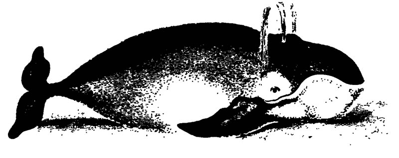
I am the captain of my ship. There is a big hurricane. Water comes up on the poop deck. The bottom of the boat is white and the sides are colored. Then there is a white whale that comes from the South Pole. There are liferafts and a red, white and blue flag. (Five year old boy)
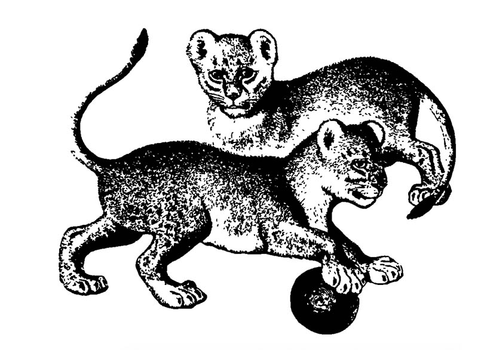
My wife and I have a lion cub as a pet in our home. The lion is very friendly until one day it bites me and I can see distinct teeth marks on my forearm. I can't move my arm or tell anyone. I am unable to call for help in any way. (24 year old worried college student)
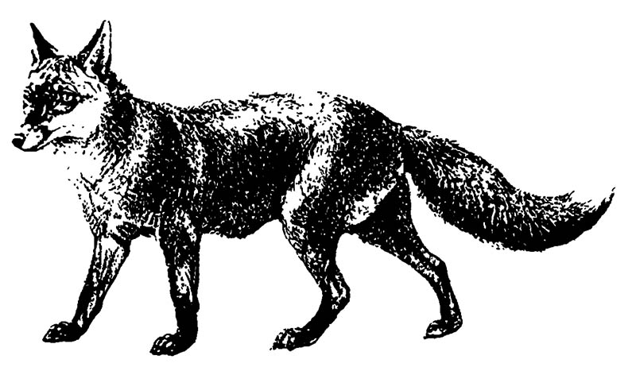
I see an animal that looks like a big wolf-hound. It pays no attention to me. I don't know why, but suddenly I start to run and in an instant the dog is chasing me. All at once it falls into a seemingly bottomless pit. As I look down, the dog seems to spin in a circle but instead of going down it is slowly coming closer and closer to me when I wake up. (22 year old male college student)
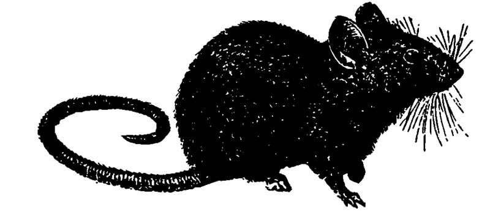
The telephone rings, I answer it, leaving my grandmother alone in the room in her favorite chair. I return to the room again. I find a mouse sitting in her chair. The mouse indicates that it is my grandmother. I am frightened. (Female college student)
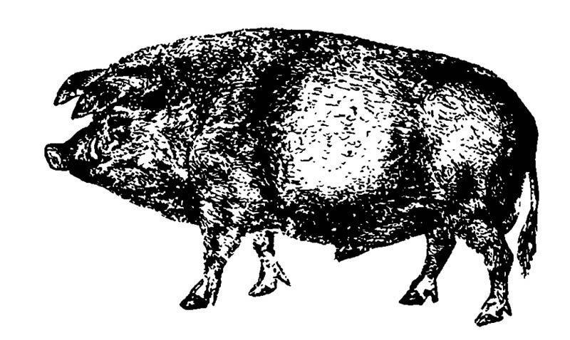
My friend Steve is hunting wild pigs with a Boy Scout knife and a wild pig turns into a cowboy. The cowboy says, "I'm going to eat you up." I say, "Eat me up, then." He comes at me with a knife and sticks in my arm real hard, but it doesn't open up my arm because it is too hard. I say to the cowboy, "I'm too hard, I'm on your side." (Four year old boy)

I am riding a horse along a steep mountain trail overhanging a high cliff. The horse is galloping and can't make a turn and goes over the cliff. On the way down I realize to myself, "I'm a dead cookie." I am very disappointed at the fact that I won't achieve any of my ambitions. (20 year old male college student)
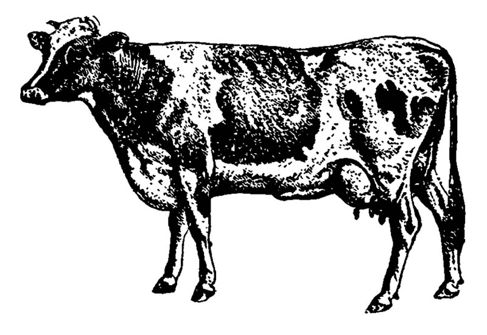
I'm supposed to go to a dance. I'm wearing a red and white dress. My mom is wearing a purple dress. I get new shoes - black - they are funny looking. When I get out of the shoe store, I see my Aunt's house is next door to the store. We are driving to New York City for the dance. I see a freak cow with people coming out of it. (Twelve year old girl)
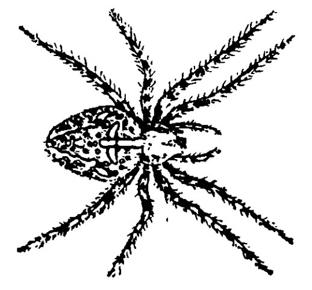
I am sitting down in a movie theater, facing ahead when a woman seated behind me places a black spider, like a tarantula, on my shoulder. I scream. No one else seems to notice. I beg her to take it off me. She says she wants me to look at it. I say I have seen one before and I don't want to look. She insists. I wake up perspiring, and begin to look for the spider. (Woman, three months pregnant)

References
Boss, M. (1958). The Analysis of Dreams. New York: Philosophical Library.
Despert, J. L. (1949). "Dreams in Children of Preschool Age." The Psychoanalytic Study of the Child, 34:141-80.
Fodor, N. (1951). Nightmares of cannibalism. American Journal of Psychotherapy, 5, 226-35.
Freud, S. (1961). The Interpretation of Dreams. New York: Wiley.
Guthei I, E. A. (1960). The Handbook of Dream Analysis. New York: Grove Press.
Hadfield, J. A. (1954). Dreams and Nightmares. Baltimore: Penguin.
Jelliffe, S. E., & Brink, L. (1917). "The Role of Animals In the Unconscious with Some Remarks on Theriomorphic Symbolism as Seen in Ovid." Psychoanalytical Review 4:253-71.
Jones, E. (1959). On the Nightmare. New York: Grove Press.
Jung, C. (1916). Psychology of the Unconscious. New York: Moffat, Yard.
Stekel, W. (1943). The Interpretation of Dreams. New York: Liveright.
Van de Castle, R. L. (1983). Animal figures in fantasy and dreams. In A. H. Katcher and A. B. Beck (Eds). New Perspections on Our Lives with Companion Animals. Philadelphia: University of Pennsylvania Press.
Yoder, A. (1947). Animal Analogy in Shakespeare's Character Portrayal. New York: King's (Columbia University Press).